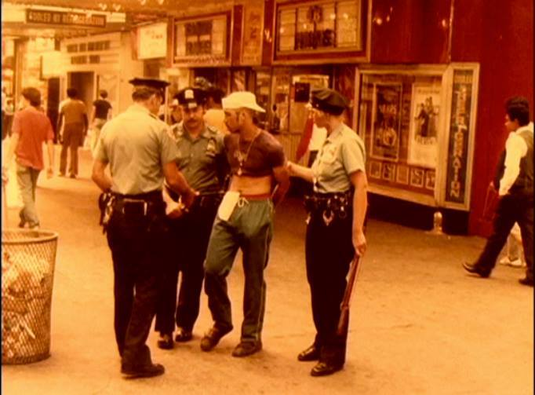
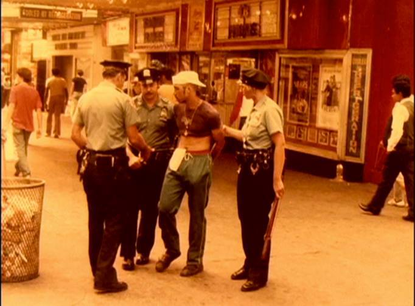
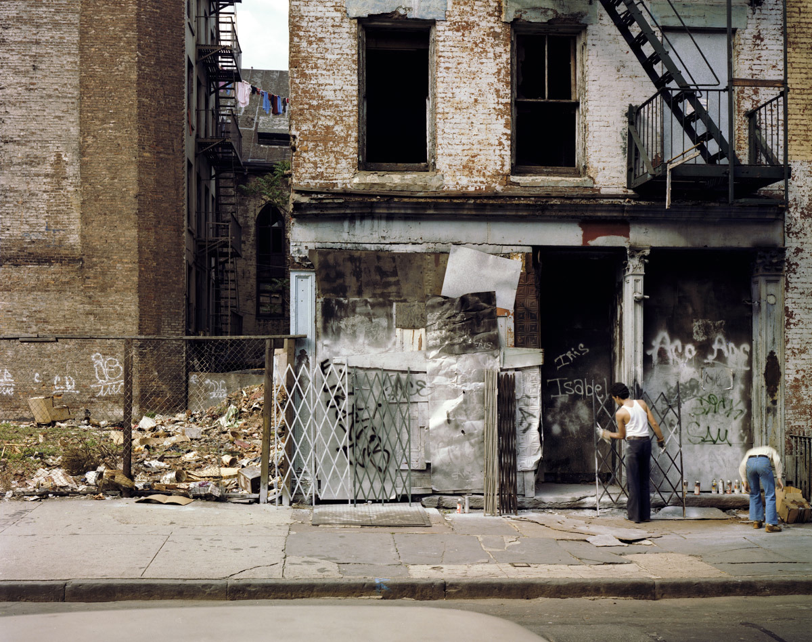
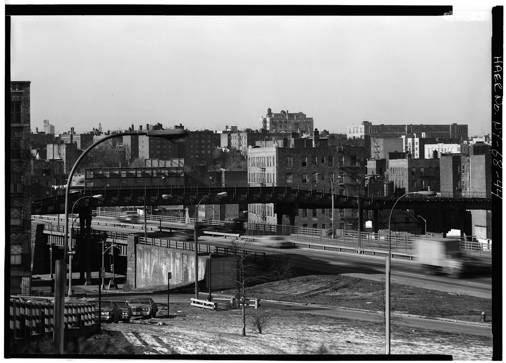
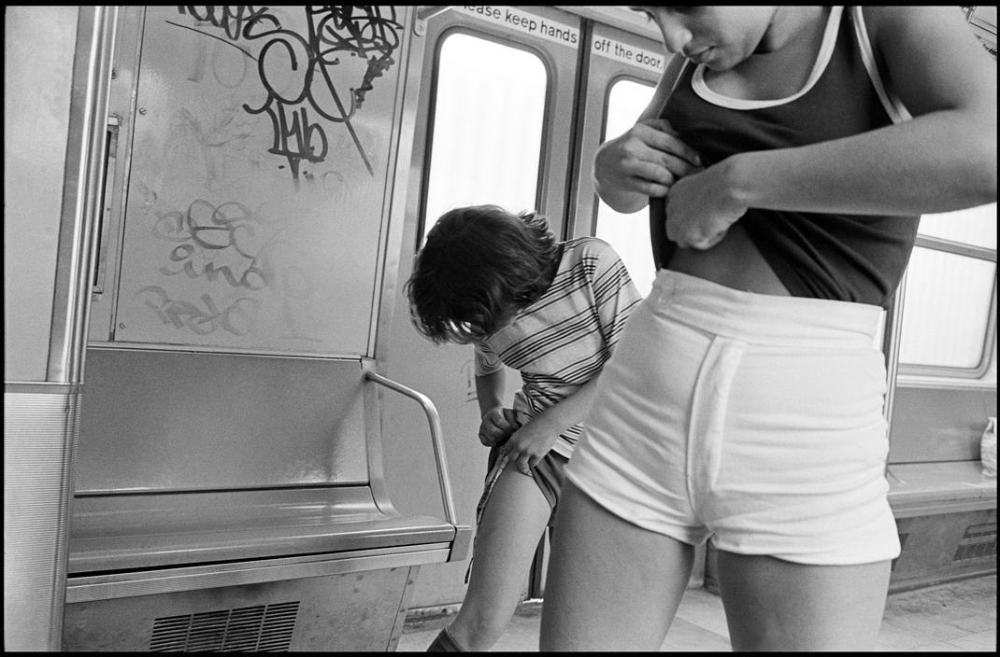
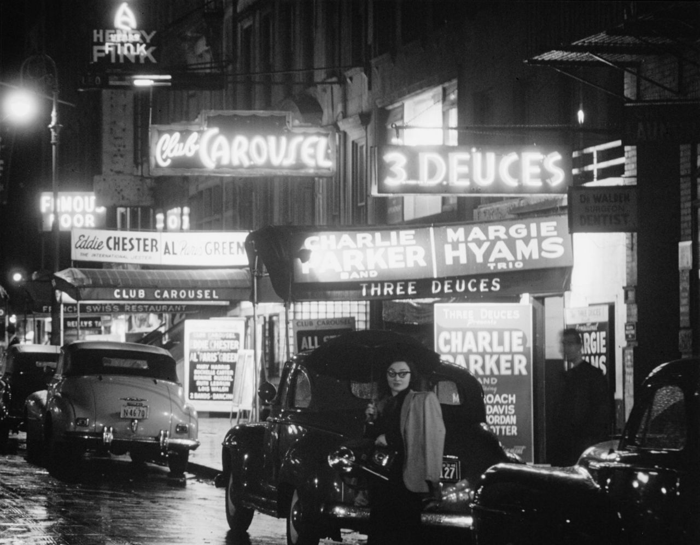
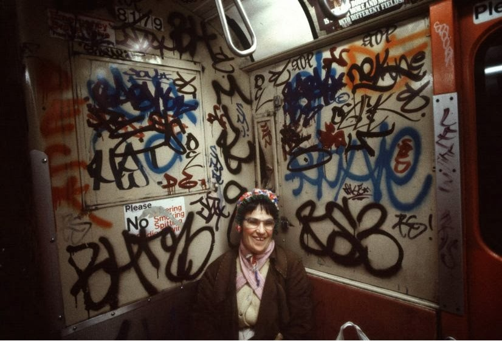
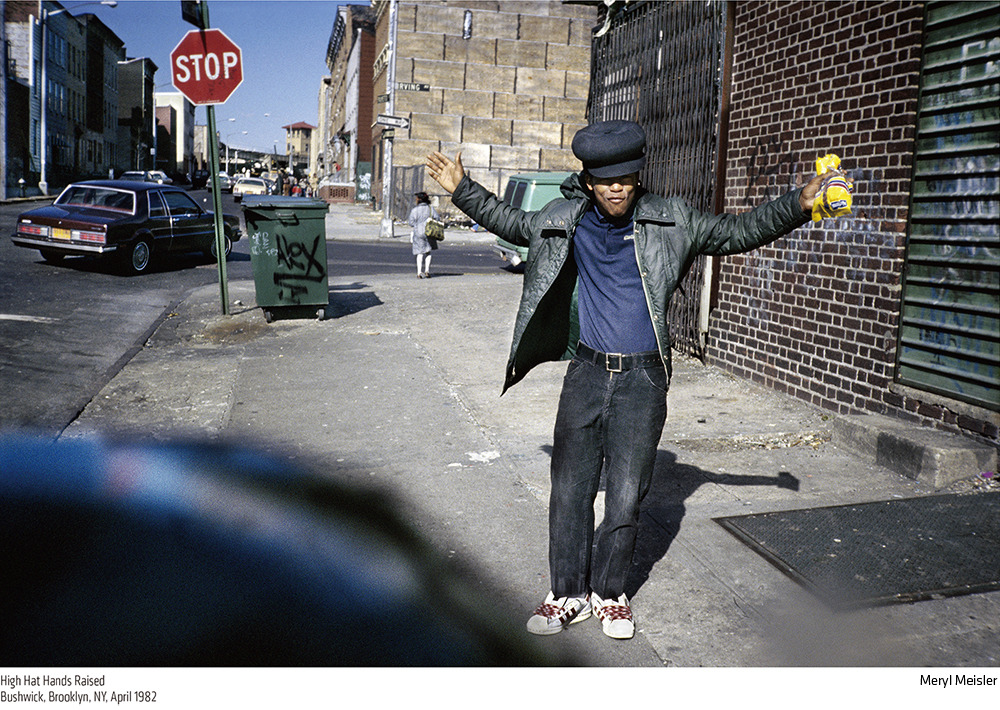

Thank you, Tumblr World, for being here when I need you.


Stanton St, 1980
Garry Winogrand / Park Avenue, New York / 1959.

On Fox Street in the Bronx, an abandoned Plymouth Savoy becomes a jungle gym for kids to play on in the summer of 1966.
2 train, 1985

Weiser’s Book Store. 4th Avenue, New York City. 1940s.
Photographer: Andreas Feininger

Orchard Street, 1980

Behind the scenes of the iconic image of Marilyn Monroe standing on the subway grate. On location in NYC, filming of Seven Year Itch, 1954

Cross Bronx Expressway, 1974

Someone either sleeping or dead on the roof of a parked car.
W. 4th Street, 1970
Park Ave and 132nd St., 1986

High fashion on the A train, 1978

Beastie Boys, 1984
by Josh Cheuse
Wrestling on the A train, 1978


Old dudes eating watermelon. Essex St, 1971.

52nd Street. Jazz. 1948.

B-way, 1967
James Jowers
(George Eastman House)

6th Ave at 27th Street, 1978
Models Carmen Dell’Orefice and Betsy Pickering, First Avenue and 23rd Street, Harper’s Bazaar, 1958.
Photo by William Helburn.

Happy or psychotic? Hard to tell.

Heading down to Wall Street, 1981

John Lennon and Yoko Ono in New York City, 1972.

Statue of Liberty, 1981
Harold Feinstein Boy Preparing to Jump from the Pier, Coney Island, New York 1989

Times Square, 1981

Brooklyn, 1980s
Thank you, Tumblr World, for being here when I need you.

Ludlow St, 1984
1968/69
Subject: Prefabricated portions of the towers exterior “sleeve” construction with Kangaroo Crane at the World Trade Center.
Architect: Minoru Yamasaki + Emery Roth & Sons
Engineers: Worthington, Skilling, Helle & Jackson,Leslie E. Robertson Associates
Location: Manhattan, New York City, New York, USA
Note: Empire State Building in background

Slushy, snowy mess, 1982

Pan Am Building

Car? We don’t need no stinking car.
Red Hook, 1990
Louis Stettner, Mother and Child on the 79th Street Crosstown Bus, 1975

Riders read their morning newspapers after the end of the city’s 114-day newspaper strike. New York, 1963.
By Jacob Harris
Times Square, 1963

Broadway and 49th, 1955
You can take the person out of NYC, but you can’t take the NYC out of the person!

Yeah, you know you want my hat.
Bushwick Brooklyn 1982

Hitchcock chillin’ outside the New Yorker movie theater on 89th and Broadway. Early 70s, I assume.

East 14th Street, 1986
Not at the YMCA
Roller Skating in NYC Central Park in the 1980s
Times Square, New York City, New York, 1962.

Bronx 1970
Walking on the walls
1. Is he holding a cat sculpture or a bong? (Or both?)
2. Longer shorts, dude.
3. Lipstick on a moving train. Rock and roll.

Times Square in 1980
Outside Stuyvesant High School, 1983
Photo credit: Robert J Fisch

Kids love graffiti!